Block it in clay
Pose mannequins, dress the set, frame it with a real lens. The Stage renders seven control passes: clay, colour ID, depth, normal, pose, lines and mask.
The open-source Higgsfield, built on ComfyUI
Films, viral trends, music videos, brand content, VFX, 3D and one-job tools on one engine. Each studio has a pet who knows it and does the work with you. Open weights by default: LTX-2.5 makes picture and sound in one pass, on your GPU or on Comfy Cloud.
Free to try: every studio opens on its example, and its pet shows you around.
Seven studios · one engine
Each studio has its own home, its own examples and a pet in its chat bar who knows that studio and nothing else. All seven run on the same server, the same ComfyUI workflows and the same take log.
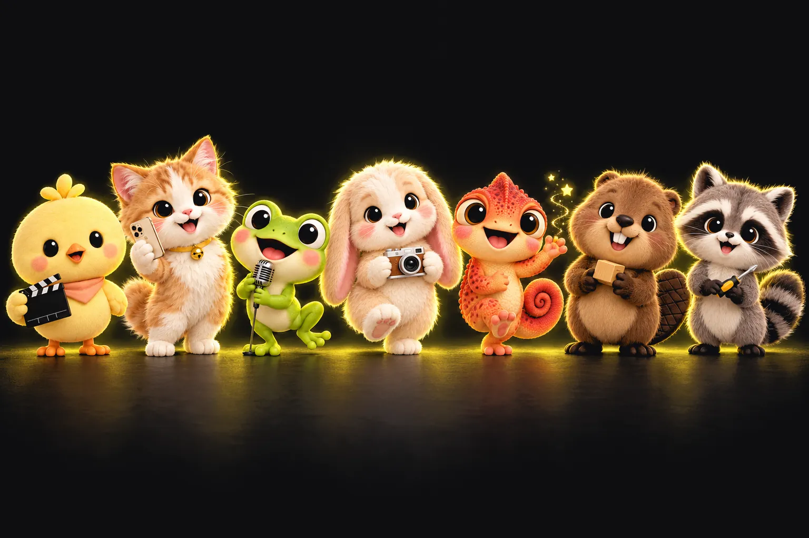
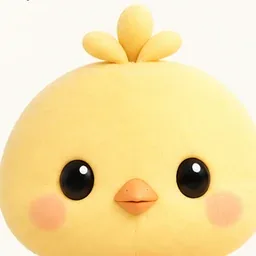
Ketkout head chefA film from one sentence: story, stage, shot, cut.
Films · Shots · Stages · EditsViral trends, made yours.
Trends · Cast swapsA music video from a track.
Songs · Music videosReady-to-post content for a brand.
Brand kits · Posts · Motion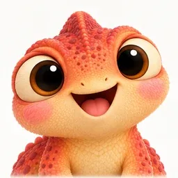
Paprika VFX houseA scenario of shots; every pass a Comfy Cloud workflow.
Inpaint · Day to night · Outpaint · Cut out · SoundClay in, toast out: a render, then a 3D model.
Renders · Maps · GLB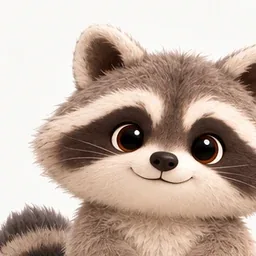
Truffle toolsmithOne tool, one job: a shelf of single tools.
Upscale · Cutout · Edit · SoundThe director's studio. Write one sentence and Story writes the film: its bible, its script and a storyboard. Block a shot on the Stage with mannequins and 372 clay pieces, roll it in Shot with LTX-2.5, picture and sound in one pass, then cut the film in Cut.
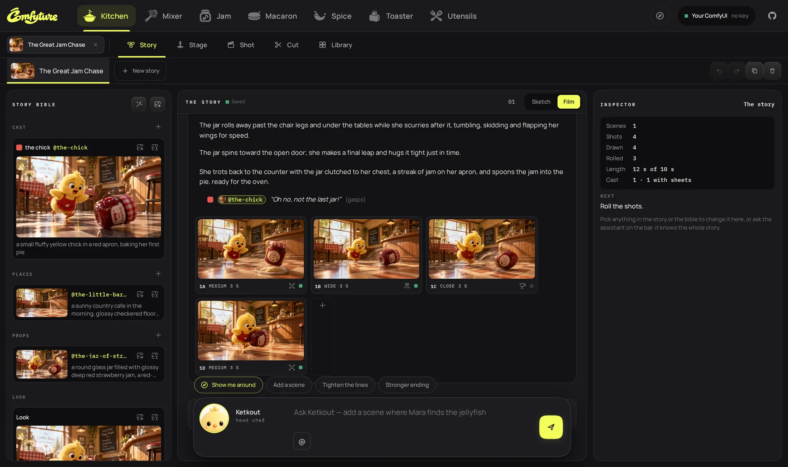
Story: the bible on the left, the film as one document with a storyboard frame per shot, the inspector on the right.
Pose mannequins, dress the set, frame it with a real lens. The Stage renders seven control passes: clay, colour ID, depth, normal, pose, lines and mask.
A transformation paints its ending first with Qwen Image 2.1. You check it, then LTX-2.5 turns your photo toward it, with its sound.
Crash zoom, bullet time, set on fire, gold statue… Each preset is a readable file: a script with its camera and its sound.
 02 · Mixerwith Praline, trend boss
02 · Mixerwith Praline, trend bossA shelf of viral formats, each with its beats over time and the feel of its music. Swap Mixer's crew around, or cast your own photo in any role, your pet or yourself, and Make it: the cover is redrawn with your cast, the beats are rolled with LTX-2.5, an original track in the trend's feel is made with ACE-Step, and it is cut with the trend's caption.
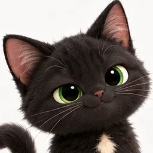
SesameOr drop any edit you like: it is split at its cuts, each shot redrawn with your cast and rolled copying the original's motion.
Upload a song or make one with ACE-Step 1.5 from a few words. Jam reads the beat in your browser, hears the words (Demucs and Whisper), cuts on the beat, and has your artist sing it lip-synced, or dance where nobody sings. The words go on as captions: pop-in, karaoke, bounce or lower third.
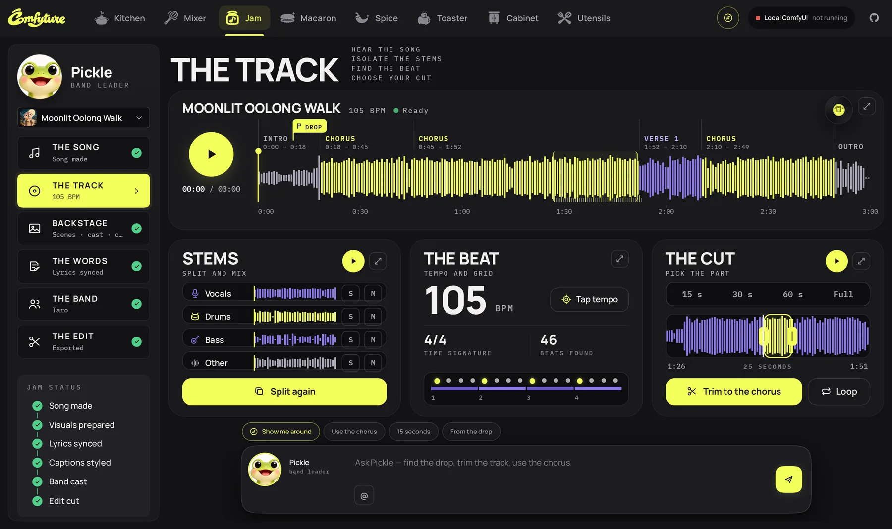
A real brand kit (palette, logos and their colourways, type, voice, rules, products) and the content made from it: the week's plan, sixteen templates in seven categories, every format you ask for (1:1, 4:5, 9:16), motion, and a brand guard that reads every design's colours against the palette before export.
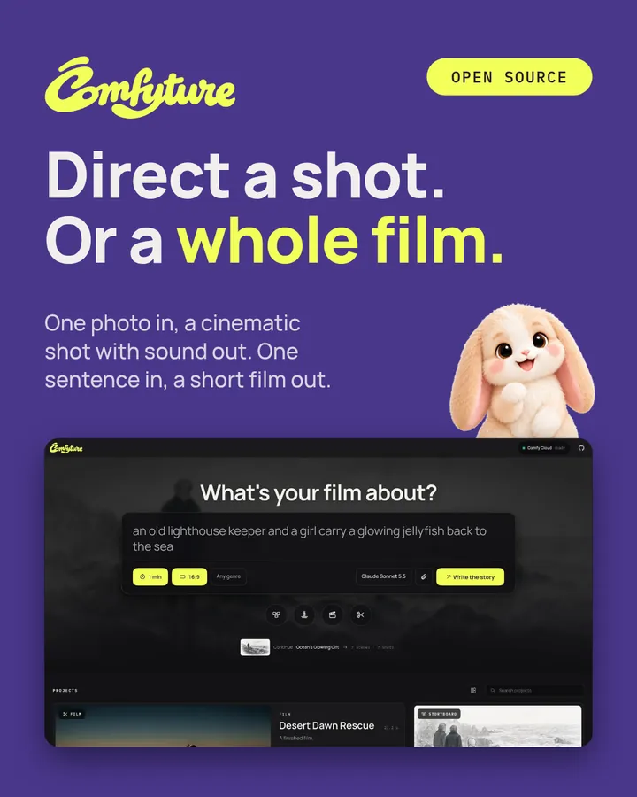
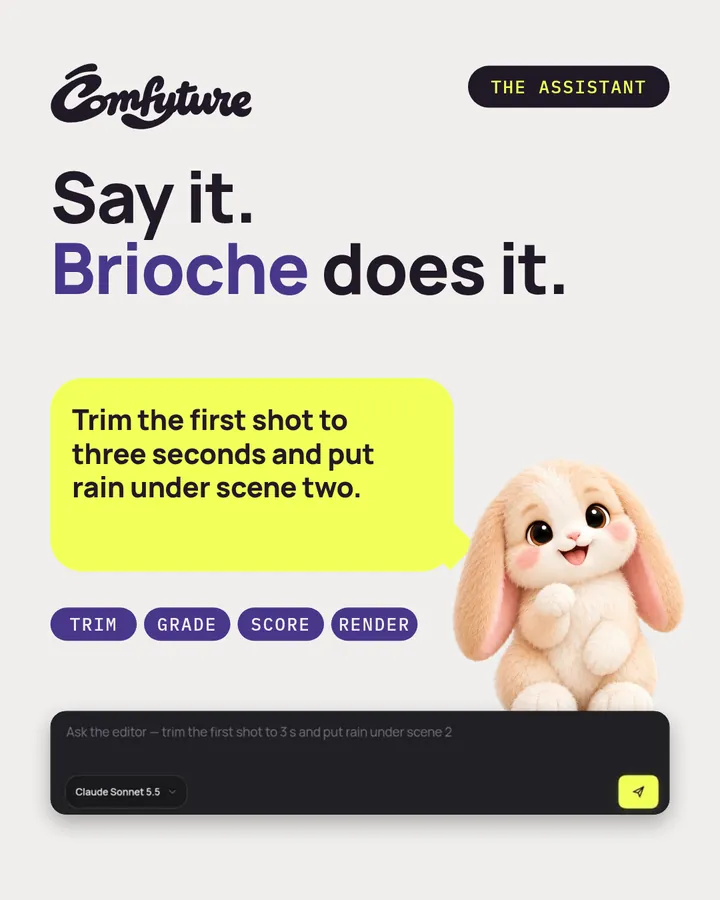
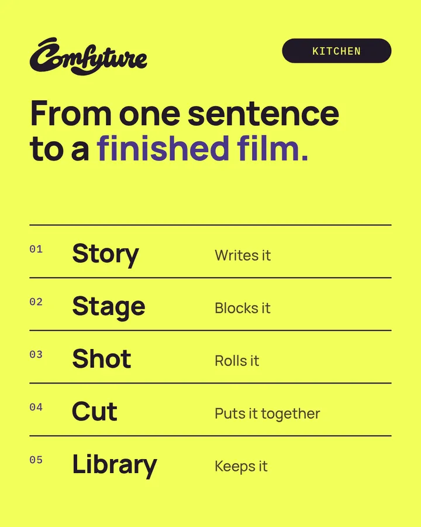
Two brands made through Macaron's own screens: Comfyture's, and Little Otter Tea, a fictional cold-brew oolong made end to end as a test.
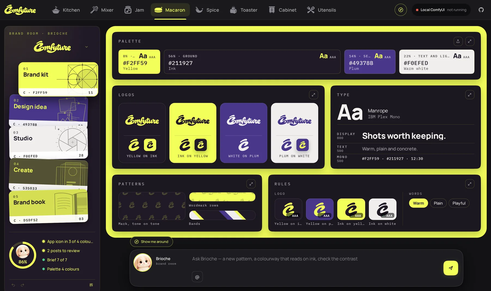
An AI VFX suite. A scenario of a few shots: roll one with LTX-2.5 from a first frame, or drop a clip, then run the tools on it, every one a workflow on Comfy Cloud: the IC-LoRAs of LTX-2.3 on the app's own graph, SAM3's cut-out, SeedVR2's upscale, LTX-2.5's sound, the catalog's templates. Each pass keeps the clip it ran on, so the viewer wipes between what a tool got and what it made; a pass taken off waits in the bin and goes back where it was made. Paprika reads a frame of the shot, says what looks off, asks what you want of it and proposes chains of passes with their price: one yes runs a chain, pass on pass.
Our own scenario, our own cast: five first frames drawn from the cast's sheets, five plates rolled by LTX-2.5, then the tools chained on each. Every clip here is a real run on Comfy Cloud. Drag the line to see the plate against the last pass of its chain.
SH010 · The yard A white van was parked in the plate: Inpaint redrew its region as a stone house. Then the day turned to night, the frame widened to scope, and the yard was given its sound.
Plate › Inpaint, the van › Day to night › In-outpainting to scope › Sound
SH020 · The lookout Rain poured on Pickle's crate, the camera found a new angle, and SAM3 cut him out: a green screen, the matte kept beside it.
Plate › Water › Crossview › Cut out
SH030 · The jar The close-up missed focus. Refocus pulled it back, SeedVR2 took it to 1080 lines, and the jar got its creak.
Plate › Refocus › Upscale › Sound
SH040 · 1958 The first heist, as a scratched newsreel: restored, colourised, and upscaled.
Plate › Restoration › Colorization › Upscale
SH050 · The dance The dance redrawn under its own pose: the same moves, a snowy night, two new faces, with an accordion tune from LTX-2.5.
Plate › Union control: pose › Sound
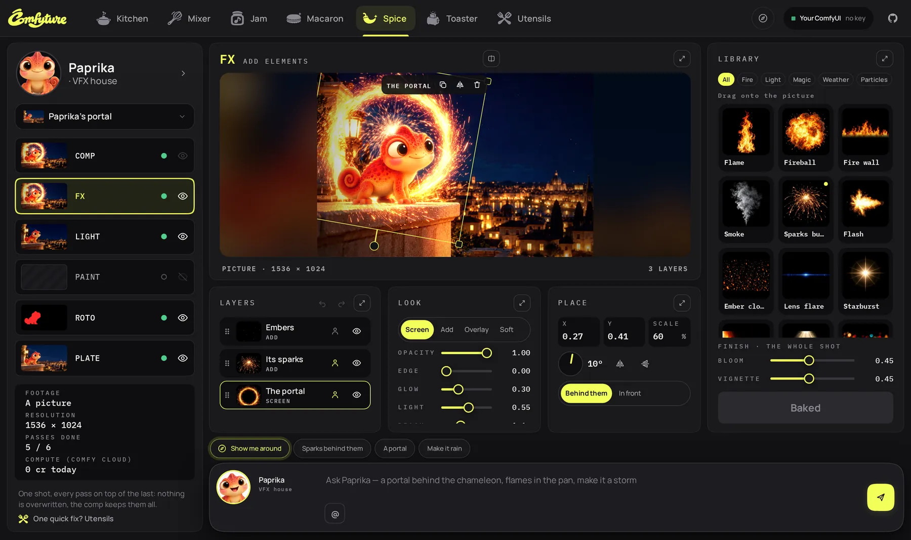
Restore, upscale, grade and light, clean, frame, camera, control, effects: the IC-LoRAs of LTX-2.3, run on the app's own graph with the words their cards give. Beside them SAM3's cut-out, SeedVR2's upscale, LTX-2.5's sound and the catalog's templates. Pick a tool, say what it should do, and its price is on the yellow key, which asks before it spends.
The library: every tool a card with a picture, a frame of what a real run on our own footage was given beside the frame it made, and a dot for what that run showed: did what its card says, did not, or needs more than a clip. Paprika sets the tools up from words: take the van out, turn the day to night, widen it to scope, give it its sound; and a box to paint out is drawn on the viewer, where she places it from what she sees.
Block an object or a whole set in 3D from ten shapes and the Stage's 370-odd pieces, or ask Crumpet to build it from a sentence or a photo. Toast it: the clay frame and its control maps become a finished picture. Then the clay's four views become a real 3D model with Pixal3D, a GLB to download or to put on the Stage.
Crumpet's workbench: 17 parts (library pieces and shapes), the clay frame and its depth sent at 55%.
The examples' renders were made with GPT Image from these clay frames, for free; in the app, Toast it sends them to the image model you pick.
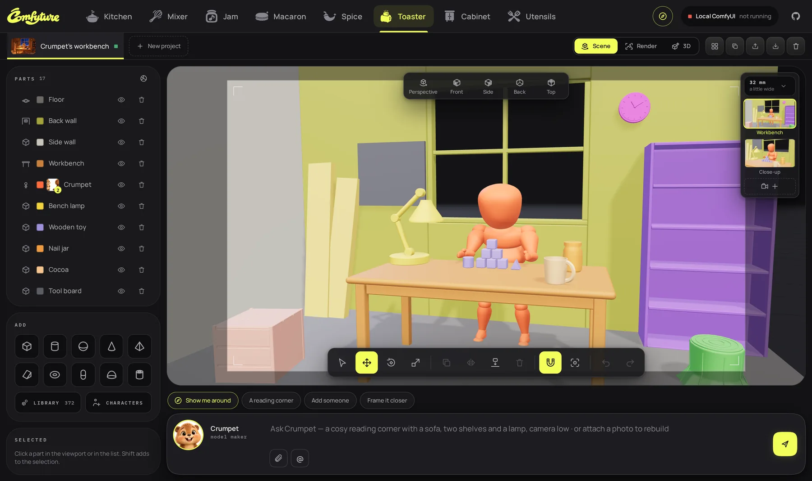
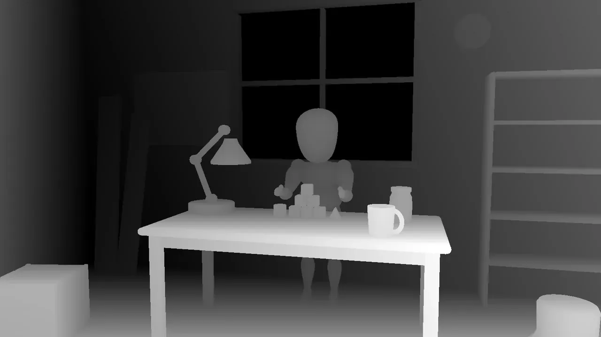
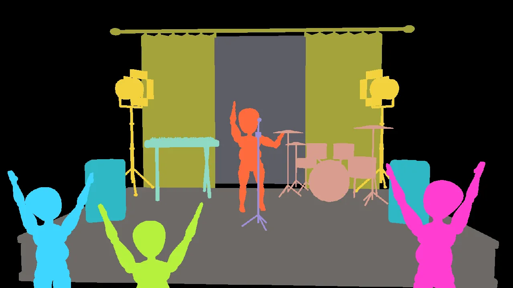
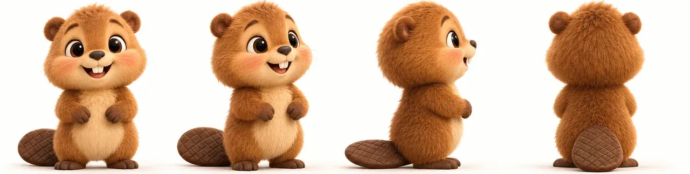
The four clay views, drawn on one sheet and rendered in one picture so they agree, go to Pixal3D on Comfy Cloud: out comes a GLB.
A shelf of single tools, one input and one result each: upscale, remove a background, variations, an edit in words, extend a clip, lip-sync a photo to a voice, add sound to any clip, upscale a video, music and sound effects. And the 691 official ComfyUI workflows, each opened as one form you can run.
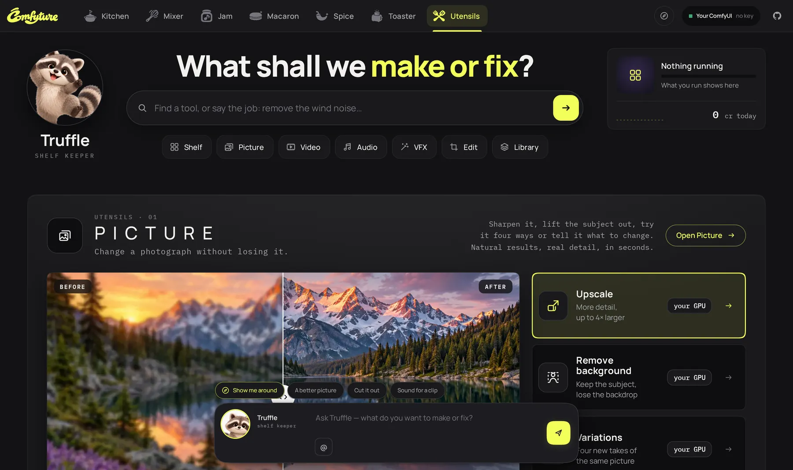
The pets
Each studio's pet lives in its chat bar and knows that studio and nothing else. Ask in words: they act through the studio's own tools, and every change is listed with an Undo.
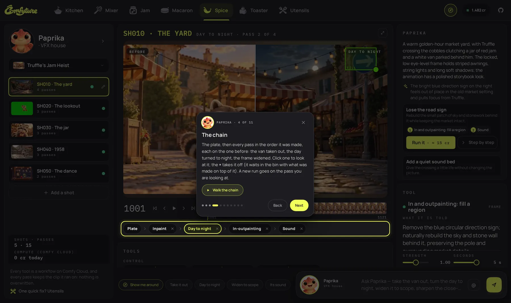
two people arguing by a wall, low angle
the hottest trend with Mochi in the lead, then make it
cut on the beat, zoom on the drop, add a whip
a new pattern, a colourway that reads on ink, check the contrast
a portal behind the chameleon, flames in the pan, make it a storm
a cosy reading corner with a sofa, two shelves and a lamp, camera low
upscale my latest picture, cut out its subject, make it night
Name a file or an earlier take with @, keep a conversation per studio, and pick the model: Gemma 4 inside ComfyUI, or a partner's through Comfy Router.
Open weights by default
Every picture, video and sound model Comfyture runs by default is open weights, run as Comfy's own templates. The partners' models (GPT Image, Nano Banana, Veo, Kling and more, through Comfy Router) are one pick away, and one switch keeps them out.
With Lightricks' IC-LoRAs: references, motion copy, the detail upscaler.
The default artist, its Turbo and Edit; FLUX 3 Klein, Krea 2 Turbo, Z-Image Turbo.
Songs from a few words; Stable Audio 3 for sound effects.
The writer, the pets, and LTX-2.5's text encoder, inside ComfyUI.
Plus VOID, FILM, Demucs, Whisper and BiRefNet.
4x-UltraSharp for pictures, SeedVR2 for video, Pixal3D for models.
The account panel's switch sends every render to Comfy Cloud, or to your own ComfyUI through comfy-api-proxy, at once and without a restart. The same code either way, through the official Comfy SDK.
Run it on your GPUCOMFYTURE_OPEN_WEIGHTS=1
Keeps every partner model off the pickers: Gemma 4 writes, Qwen Image 2.1 draws, LTX-2.5 rolls. Leave it off and the partners' models sit one pick away, billed in Comfy credits with the same key.
Gallery
Run it
You need Node.js 22.18 or newer and ffmpeg. With no key, every studio opens on its example and its pet's tour; nothing is spent.
$ git clone --depth 1 https://github.com/ShAInyXYZ/Comfyture-App
$ cd Comfyture && npm install
$ npm start # then open http://127.0.0.1:5177Every studio opens on its example. The compass at the top right starts a guided tour.
Paste a Comfy API key in the account panel, or put COMFY_API_KEY=… in .env. Every paid key shows its price first.
ComfyUI with the models (scripts/get-models.sh), then pip install comfy-api-proxy && comfy-api-proxy run, and pick Renders on → Your ComfyUI.
Open the live demo and play with every example, or clone it and run it on your own GPU tonight.